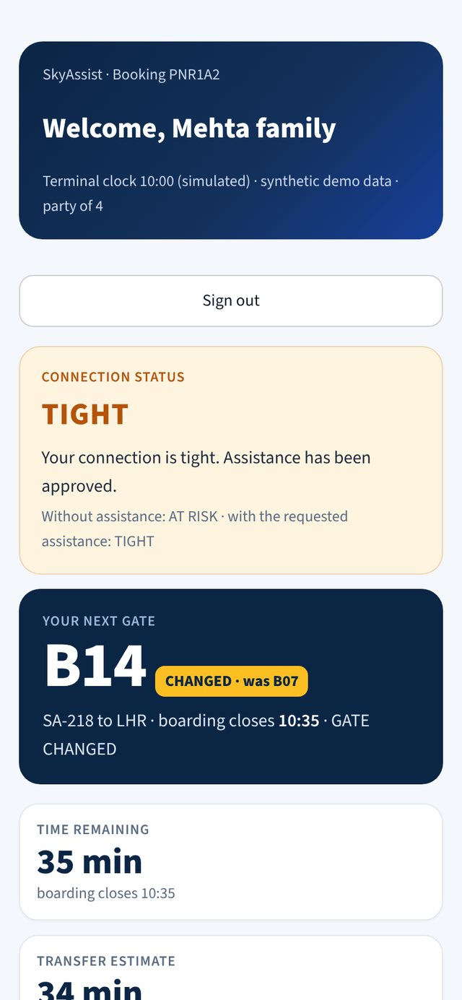
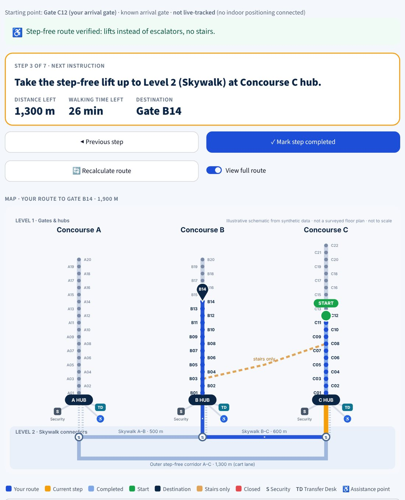
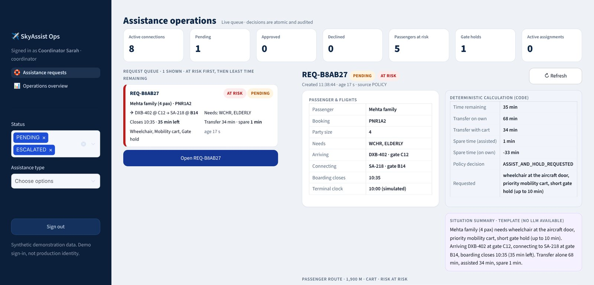
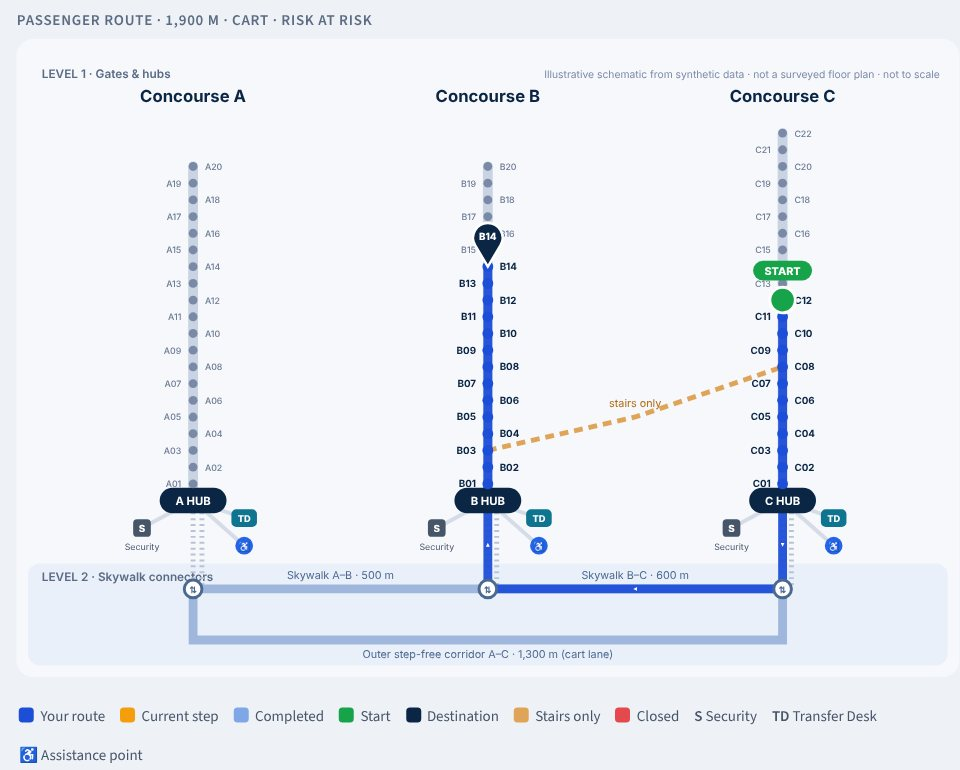
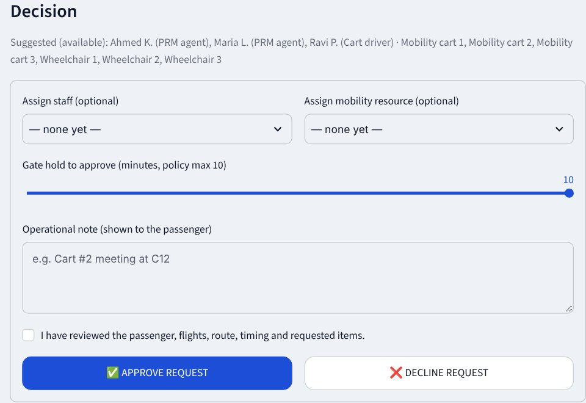

SkyAssist 2.0
So a family with a wheelchair never has to ask where their next gate is, and is never told help is coming until a person has approved it.
Passenger portal, indoor navigation and an airport coordinator portal on one deterministic backend. Python, SQLite, Streamlit, with an optional LLM.

10:00. The Mehta family lands at gate C12.
Version 1 answered the family. Version 2 runs the journey.
Version 1
- One screen mixing the passenger chat and the coordinator buttons
- Directions as a text list
- Approve or decline, then a chat message
- Status lived in memory and chat history
Version 2
- Two portals with separate sign-in, checked in the backend
- Indoor map, step-by-step navigation, step-free routing
- Full lifecycle: approve, assign, dispatch, en route, completed
- Every state stored in SQLite and audited with timestamps
Built on the v1 code, not rewritten: all ten original scenarios still pass with identical numbers.
The passenger sees the truth, in plain words
- The verified gate, not the printed oneGate B14, with the change from B07 called out.
- Risk that matches realityAt risk until assistance is approved; tight once it is. The extra help is never counted early.
- Every number from the backend35 minutes left, 68 on their own, 34 with a mobility cart.
- A tracker, not a promiseRequested, coordinator review, approved, dispatched, en route, completed.

Directions that don’t need a staff member
The terminal is a graph: 62 gates, three hubs, Level 2 skywalks, lifts, escalators, stairs, security, transfer desks and assistance points. Dijkstra finds the shortest valid route; distance is the sum of real corridor lengths, never a straight line on the map.
- Start navigation, mark each step doneDistance and walking time left update with every step, and progress survives a refresh.
- Gate changes reroute automaticallyThe old route is retired and the reason is shown.
- Honest about locationIt starts at the arrival gate, lets you set your position by hand, and says it is not live-tracked.

The shortest route is the wrong route for a wheelchair
From C12 to B14, a walker can take the mezzanine stairs. Grandma can’t. SkyAssist routes her through lifts and the Skywalk instead, and plans her timing on that longer route.
If a lift is out of service and no step-free route exists, she is told so and pointed to an assistance point. She is never quietly given the stairs.
The coordinator sees the situation before deciding

At risk first, then least time left. Filters for status, wheelchair, escort, cart and gate hold.
The numbers come from code. The summary is labelled as a template or guarded AI text.
Review, then decide, exactly once
- The passenger’s route on the same map1,900 m, cart profile, at risk.
- A deliberate decisionApprove or decline only after ticking that the passenger, flights, route and timing were reviewed.
- Real resourcesAssign staff and carts that are actually free; the gate hold is capped at 10 minutes.
- No double decisionsEight coordinators clicking at once produce one decision, enforced by an atomic database update.


Approved doesn’t mean someone is on the way
Each state appears on the passenger’s screen only when a coordinator records it.
After 90 seconds the request is flagged and the passenger is told it is still waiting.
“No staff are on the way. Go to the Transfer Desk.” The risk stays at risk.
Decisions live in SQLite; the waiting agent resumes from the stored result.
Policy, chat and the passenger’s own form never create duplicates.
The AI talks. The code calculates. A person authorises.
LLM
Qwen3, Gemini Flash or Groq, or none at all
- Reads stressed messages, including Hinglish
- Rewrites the verified reply calmly
- Is blocked if it adds any gate, time or number that isn’t in the data
Code
Deterministic and tested
- Flight and gate status
- Graph routing and transfer time, rounded up
- Assistance policy: cart, escort, gate hold, rebooking
Coordinator
The only one who can commit people
- Approves or declines
- Assigns staff and carts
- Records dispatch and completion
Tested like it has to work on the day
| Area | What the tests prove |
|---|---|
| Passenger | Own booking only, verified gate, numbered directions, progress, gate-change reroute, pending, approved and declined states, no false dispatch |
| Coordinator | Queue order and filters, route and calculations on open, notes, duplicate and concurrent decisions blocked, passengers refused |
| Navigation | Shortest path, distance equals the sum of edges, step-free avoids stairs and escalators, closures reroute, clear errors, nothing fabricated |
| Reliability | Pending survives reruns, timeout is not approval, many pending at once, state survives a restart, migrations safe to run twice |
Two portals, one source of truth
Both portals call the same services; the services check the user’s role on every call, so hiding a button is never the only protection.
Honest limits: the data is synthetic, the terminal clock is simulated, location is manual and dispatch is recorded by hand. Live flight data, indoor positioning and SkyOps Twin topology have interfaces ready, and none is faked.
Arrived at B14, with one minute to spare.
Next: live flight and gate feeds, beacon or QR positioning, a real cart dispatch system, and SkyOps Twin supplying corridor and lift status, all behind the interfaces already in place.
python -m pip install -r requirements.txt python -m streamlit run app.py # passenger /passenger PNR1A2 / demo123 # coordinator /coordinator sarah / coord123 python -m pytest -q # 81 passed
All data shown is synthetic demonstration data.